Source: AVEVA Application Server 2023 Training Manual, Module 10, Section 2 & Lab 19
Covers DI redundancy concepts, the RedundantDIObject, and a hands-on lab to configure redundant DI objects, create deployment models, and force failovers. (pages 10-33 to 10-54)
Reference: Module 10, Section 2 — Device Integration Redundancy (page 10-33)
Unlike redundant AppEngines (covered in Lesson 29), individual DIObject data sources do not have redundancy-related states. For all practical purposes they function as standalone objects. The RedundantDIObject adds redundancy at the data-acquisition level by monitoring two DIObject sources and automatically switching between them.
The RedundantDIObject determines that a data source is in a bad state by monitoring three attributes:
| Attribute | Bad State Value | Meaning |
|---|---|---|
ConnectionStatus | Disconnected | Lost connection to the OI Server |
ProtocolFailureReasonCode | Non-zero | Communication failure with field device |
ScanState | Offscan | Scan disabled on the source object |
When any of these conditions is detected, a switchover attempt is made to the other data source.
The RedundantDIObject supports these I/O operations:
Reference: Module 10, page 10-34
The architecture diagram below shows the complete data flow from application objects through the RedundantDIObject down to physical field controllers:
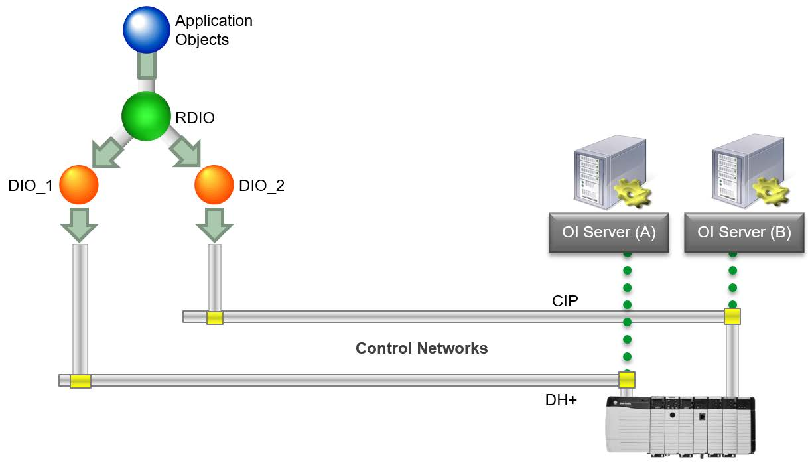
| Component | Role | Configuration |
|---|---|---|
| Primary DIObject (DIO_1) | Initially active data source | Configured with OI Server connection, scan groups, item address space |
| Backup DIObject (DIO_2) | Initially standby data source | Same OI Server groups and item address space as DIO_1 |
| RedundantDIObject (RDIO) | Redundancy manager | References both DIO_1 and DIO_2; shared scan groups |
During configuration, you set one DIObject as Primary DI Source and the other as Backup DI Source. These are starting points. At runtime:
PingItem attribute for each scan group to monitor PLC connection status at runtime.
Reference: Lab 19 (pages 10-37 to 10-54)
Reference: Lab 19 steps 1–3 (page 10-38)
First, you will undeploy the existing production PLC and rename it to prepare for the redundant configuration.
Step 1. In the IDE, Model view, undeploy ProdPLC.
Step 2. Undeploy Line1, Line2, and all of their contained objects.
Step 3. Rename ProdPLC to R_ProdPLC1.
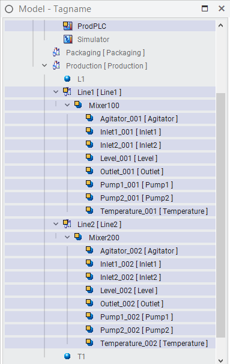
Reference: Lab 19 steps 4–10 (pages 10-38 to 10-39)
Now you will create a second DIObject instance to serve as the backup data source.
Step 4. In the Templates tab, Training\Global toolset, create a new instance of $gDDESuiteLinkClient.
Step 5. Rename the instance R_ProdPLC2.
Step 6. Open the R_ProdPLC2 configuration editor.
Step 7. On the General tab, configure the instance as follows:
| Setting | Value |
|---|---|
| Server node | <Instructor will provide node (e.g., S00PROD)> |
| Server name | MBTCP |
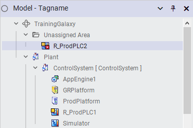
Note: The Server node shown here is for the Modbus simulator used in this course. In your plant, this will be the actual data source node.
Step 8. On the Topic tab, in the Available topics section, click the ScanGroupList button to add a topic.
Step 9. In the Topic field, enter Topic1, and then press Enter.
Step 10. Save and close and check in the object with an appropriate comment.
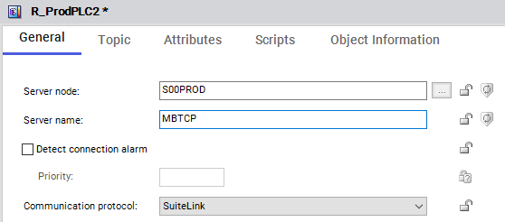
Reference: Lab 19 steps 11–18 (pages 10-40 to 10-41)
Step 11. In the Model view, assign the R_ProdPLC2 instance to the ControlSystem area.
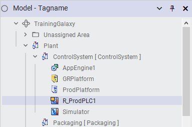
Step 12. In the Deployment view, assign the R_ProdPLC2 instance to AppEngine1.
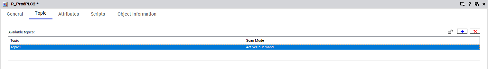
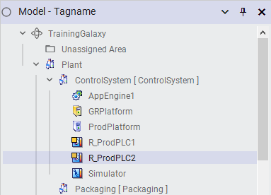
Now, you will create the Redundant DI Object.
Step 13. In the Templates tab, Training\Global toolset, create a new instance of $gRedundantDIObject, and then name the instance ProdPLC.
Step 14. Open the ProdPLC configuration editor.
Step 15. On the General tab, in the Primary DI source drop-down list, select R_ProdPLC1.
Step 16. In the Backup DI source drop-down list, select R_ProdPLC2.
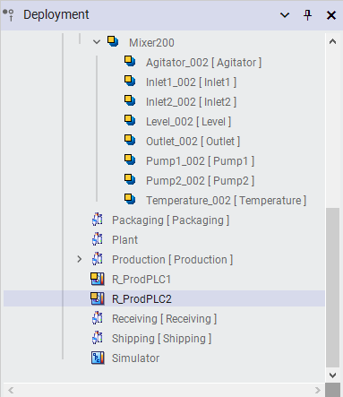
Step 17. On the Scan Group tab, click the Copy Common Scan Groups button.
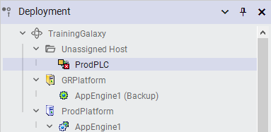
Step 18. Click OK.
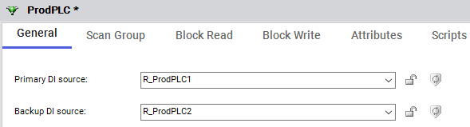
Step 19. Save and close and check in the object with an appropriate comment.
Step 20. In the Model view, assign the ProdPLC instance to the ControlSystem area.
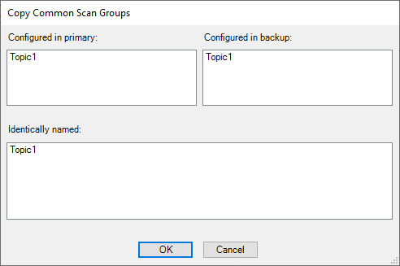
Reference: Lab 19 steps 21–29 (pages 10-42 to 10-45)
To avoid race conditions with data acquisition that can occur with engine redundancy and Device Integration objects, you will create unique Application engines on each platform to host the redundant DI objects.
Step 21. In the Deployment view, assign the ProdPLC instance to AppEngine1.
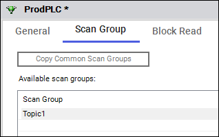
Step 22. In the Templates tab, Training\Global toolset, create an instance of $gAppEngine, and then rename it DIO_Engine1.
Step 23. In the Deployment view, assign DIO_Engine1 to ProdPlatform.
Step 24. Assign R_ProdPLC1 to DIO_Engine1.
Step 25. In the Training\Global toolset, create another instance of $gAppEngine, and then rename it DIO_Engine2.
Step 26. In the Deployment view, assign DIO_Engine2 to GRPlatform.
Step 27. Assign R_ProdPLC2 to DIO_Engine2.
Step 28. In the Model view, expand the Unassigned Area folder, and then assign DIO_Engine1 and DIO_Engine2 to the ControlSystem area.
Step 29. Deploy both DIO_Engine1 and DIO_Engine2.
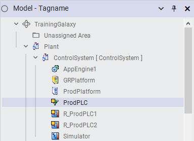
Reference: Lab 19 steps 30–35 (pages 10-46 to 10-49)
Now, you will deploy the objects by moving them from the individual DIObjects to the RedundantDIObject through the IO Devices pane.
Step 30. On the View menu, click IO Devices to open the pane.
Step 31. In the IO Devices pane, expand TrainingGalaxy\ProdPLC.
Step 32. Expand R_ProdPLC1\Topic1. Notice that the objects are all undeployed.
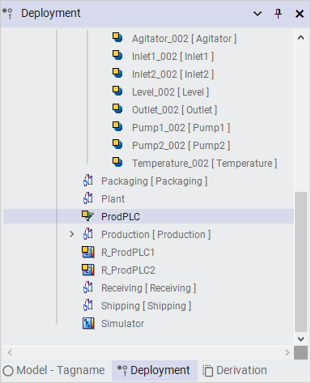
Step 33. Select all the objects in R_ProdPLC1\Topic1, and then drag them to ProdPLC\Topic1.
Step 34. Select all undeployed objects.
Step 35. Deploy the objects.
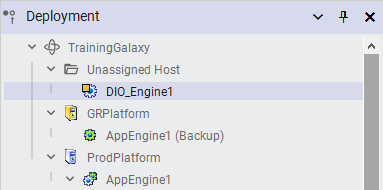
Reference: Lab 19 steps 36–52 (pages 10-50 to 10-54)
Now, you will return to Object Viewer to add Redundant DI Object attributes to a new watch window and observe failover behavior.
Step 36. In the Deployment view, open ProdPLC in Object Viewer.
Step 37. Verify data in the Mixer100 watch window.
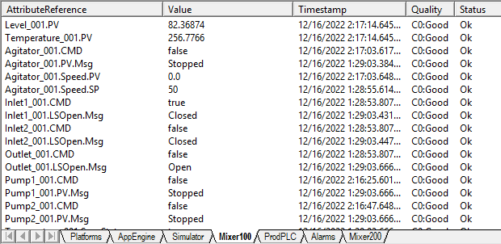
Step 38. Add a new watch window named DIO Redundancy.
Step 39. Select ProdPLC and add the following attributes to the watch window:
| Attribute | Purpose |
|---|---|
ConnectionStatus | Shows connection state of the DI source |
DISourceActive | Which DIObject is currently active |
DISourceBackup | Backup DI source reference |
DISourcePrimary | Primary DI source reference |
DISourceStandby | Which DIObject is currently standby |
ForceFailoverCmd | Command to force a failover |
StatusBackupDISource | Status of backup DI source |
StatusPrimaryDISource | Status of primary DI source |
SwitchCnt | Number of failovers that have occurred |
SwitchReason | Reason for the last switch |
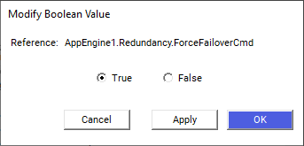
AppEngine1.Redundancy.ForceFailoverCmd. The True option is selected to trigger a forced failover. Click OK to execute. This is the same mechanism used in Lab 18 for AppEngine redundancy — here it triggers the DI-level failover. (page 10-50)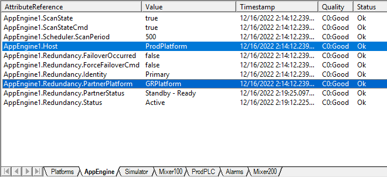
The watch window displays that R_ProdPLC1 is currently the active DI source and R_ProdPLC2 is the standby DI source.
Step 40. In the watch window, double-click ProdPLC.ForceFailoverCmd.
Step 41. In the Modify Boolean Value dialog box, click the True option.
Step 42. Click OK.
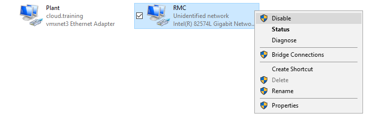
AppEngine1.Redundancy.Status reads "Active - Standby not Available" and PartnerStatus = Unknown, confirming the partner is unreachable. (page 10-31)The watch window now displays R_ProdPLC2 as the active DI source and R_ProdPLC1 as the standby DI source. The ProdPLC.SwitchCnt increments and ProdPLC.SwitchReason shows ForceFailover.
Step 43. Click the Mixer100 tab to verify that all of the data is still displaying good quality.
Step 44. On the DIO Redundancy tab, trigger ProdPLC.ForceFailoverCmd again to switch back to R_ProdPLC1 as the active DI source.
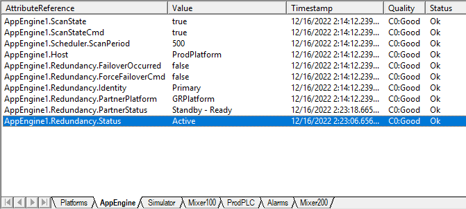
AppEngine1.Redundancy.Status has returned to "Active" (highlighted in blue). The standby partner is now available again. Steps 76–79: Enable RMC connection, verify status returns to Active, then clean up windows. This concludes the end of Lab 18 (Application Redundancy). (page 10-32)Step 45. In the console tree, expand DIO_Engine1 and select R_ProdPLC1, then add ScanStateCmd to the watch window.
Step 46. Double-click R_ProdPLC1.ScanStateCmd.
Step 47. In the Modify Boolean Value dialog box, click the False option.
Step 48. Click OK.
R_ProdPLC2 as the active DI source and R_ProdPLC1 as the standby. The SwitchCnt is now 3 and the SwitchReason is Offscan — confirming the RedundantDIObject detected the scan-off condition and triggered a switchover.
Step 49. Click the Mixer100 tab to verify that all data is still displaying good quality.
Step 50. On the DIO Redundancy tab, set the R_ProdPLC1.ScanStateCmd value to True.
ForceFailoverCmd to switch back.
Step 51. Trigger ProdPLC.ForceFailoverCmd again to switch back to R_ProdPLC1 as the active DI source.
Step 52. Save the watch list and minimize Object Viewer.
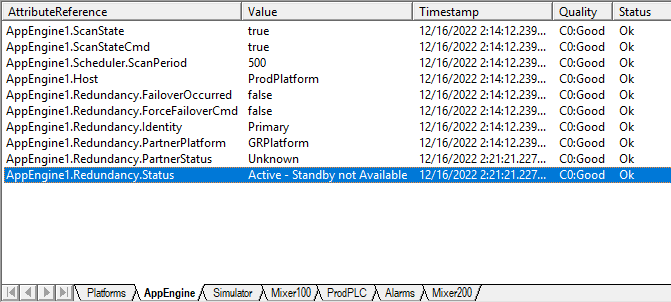
AppEngine1.Redundancy.Status = "Active - Standby not Available" (highlighted blue) and PartnerStatus = "Unknown". This state occurs when the partner platform is unreachable — the primary continues operating but has no standby backup. (page 10-31)In this lab, you successfully:
ForceFailoverCmd — observed active/standby switch with SwitchCnt incrementScanStateCmd (Offscan condition) — observed automatic switchover| Aspect | AppEngine Redundancy (L29) | DI Redundancy (L30) |
|---|---|---|
| Scope | Application logic and execution | Data acquisition from field devices |
| Objects | AppEngine pair (Primary + Partner) | 2 DIObjects + 1 RedundantDIObject |
| Failure Detection | Heartbeat / platform failure | ConnectionStatus, ProtocolFailure, ScanState |
| Auto-return | Configurable switch-back | No auto-return — manual ForceFailover required |
| Engine Hosting | Shared engine on each platform | Dedicated engines (DIO_Engine1/2) per platform |
Q1. What are the three attributes the RedundantDIObject monitors to detect a bad data source state?
ConnectionStatus (Disconnected), ProtocolFailureReasonCode (non-zero), and ScanState (Offscan).
Q2. Can the two source DIObjects be different types?
Yes, they do not have to be the same type. However, they must support the same type of OI Server groups and have the same item address space.
Q3. Why do you create separate DIO_Engine1 and DIO_Engine2 for the redundant DI objects?
To avoid race conditions with data acquisition that can occur when engine redundancy and Device Integration objects share the same engine. Each DIObject runs on its own dedicated AppEngine on a different platform.
Q4. What happens when you set ScanStateCmd back to True after an offscan-triggered failover?
The failover does NOT automatically switch back. The RedundantDIObject does not automatically return to the Primary DI Source — you must trigger ForceFailoverCmd to switch back.
Q5. What does the SwitchCnt attribute track?
The total number of failover switches that have occurred since the RedundantDIObject was deployed. Each forced or automatic switchover increments this counter.
Source: AVEVA Application Server 2023 Training Manual — Module 10, Section 2 (DI Redundancy) & Lab 19 (pages 10-33 to 10-54)
Lesson 30 of 31 — Return to Course Index